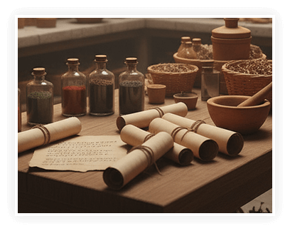
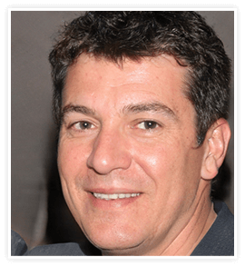
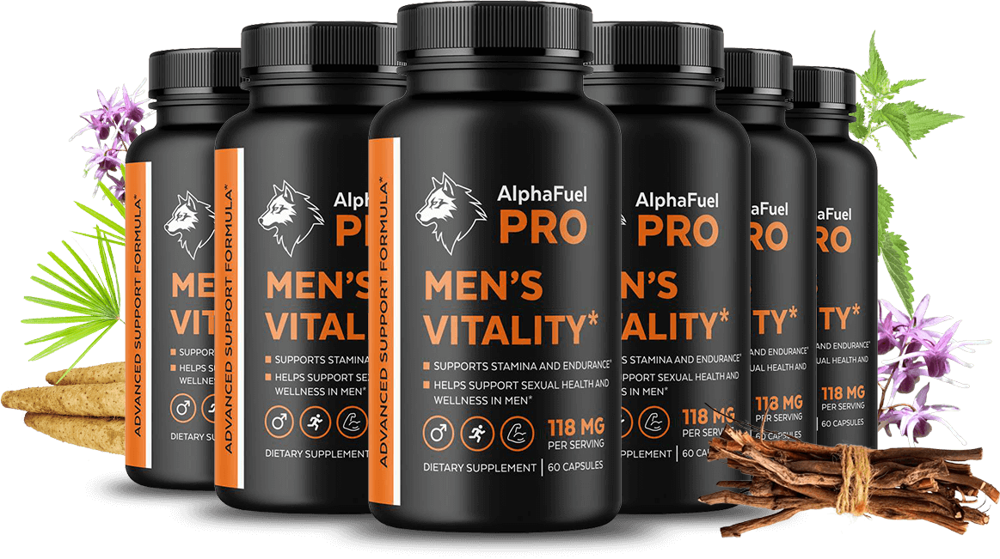
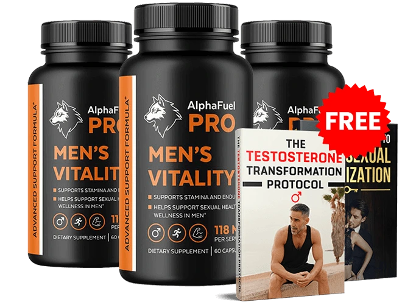

Aufsehenerregende Archäologische Entdeckung Enthüllt
Warum Altrömanische Soldaten Für Ihre Legendäre Männliche Stärke Bekannt Waren... Und Wie Sie Ihre Natürliche Hydraulische Kraft In 15 Tagen Wiederherstellen Können

Ein pharmazeutischer Forscher untersucht 2.000 Jahre alte römische Überreste und entdeckt die verborgene Ursache moderner erektiler Dysfunktion... sowie warum alltägliche Produkte systematisch das natürliche Druckventilsystem Ihres Körpers zerstören
Seine Frau drohte mit Scheidung – trotz tausender Euro für ED-Behandlungen und verschreibungspflichtige Medikamente... bis antike römische Ruinen die erschütternde Wahrheit darüber enthüllten, was die Sexualfunktion von Männern wirklich zerstört

WICHTIG:
Was Sie gleich erfahren, könnte Ihre Partnerschaft retten –
doch die milliardenschwere ED-Industrie will nicht, dass Sie das wissen
Mein Name ist Jake Stevens, und was ich Ihnen gleich mitteile, wird Sie möglicherweise überraschen...
Es erklärt, warum Sie noch immer mit unzureichenden Erektionen kämpfen... warum belastende Leistungsangst intime Momente immer wieder zunichte macht... obwohl Sie ED-Medikamente und alle anderen Optionen der modernen Medizin ausprobiert haben.
Ich bin pharmazeutischer Forschungskoordinator und untersuche antike Bevölkerungen. Und so seltsam es klingen mag – diese Arbeit hat Geheimnisse über die männliche Sexualgesundheit enthüllt, die Ihr Leben noch heute verändern können.

Aber zunächst eine Frage...
Kommt Ihnen Das Bekannt Vor?
- Erektionen, die stark beginnen, aber genau dann nachlassen, wenn es darauf ankommt
- Die belastende Scham, den Partner Nacht für Nacht zu enttäuschen
- Verschreibungspflichtige Mittel, die kaum wirken und erhebliche Nebenwirkungen haben
- Die ständige Sorge, dass die Partnerin jemanden sucht, der ihre Bedürfnisse besser erfüllt
- Die Unannehmlichkeit, Intimität 30 Minuten im Voraus planen zu müssen, nur um eine Pille einzunehmen
Wenn Sie nicken, sind Sie dabei zu entdecken, warum keine der herkömmlichen Behandlungen bisher geholfen hat...
Und noch wichtiger: wie ein 2.000 Jahre altes Geheimnis Ihre Sexualfunktion in nur 15 Tagen verbessern kann.
Die Römische Entdeckung, Die Alles Verändert
Ich habe im Laufe der Jahre Tausende antiker Überreste untersucht, doch nichts bereitete mich auf das vor, was ich in den Ruinen des alten Roms entdeckte.
Als ich die erhaltenen Überreste römischer Soldaten analysierte – Männer, die den größten Teil der damals bekannten Welt erobert hatten – machte ich eine außerordentliche Entdeckung.

Diese Krieger bewahrten ihre außergewöhnliche Männlichkeit bis weit in die 60er und 70er Jahre ihres Lebens.
Historische Berichte beschreiben ihre Ausdauer und Vitalität über Jahrzehnte hinweg...
Ihr Ruf für kraftvolle Männlichkeit war im gesamten Imperium bekannt.
Dabei geben wir im 21. Jahrhundert jährlich Milliarden für ED-Medikamente aus... und dennoch kämpft mit 50 Jahren fast jeder zweite Mann mit erektiler Dysfunktion.
Welches Geheimnis Hatten Diese Antiken Krieger?
Und noch wichtiger: Welche alltägliche "Gesundheitsgewohnheit" zerstört Ihre Funktion still von innen heraus?
Ich kann Ihnen schon jetzt sagen: Es liegt nicht an der Genetik.
Es liegt nicht daran, wie gesund Sie sind.
Und es hat auch nichts mit Ihrem Alter zu tun.
Stattdessen hängt es mit etwas zusammen, das tief in Ihrem Körper geschieht und von modernen Ärzten völlig ignoriert wird...
Etwas, das:
-

Den Blutfluss
in die erektilen Kammern blockiert -

Verhindert, dass Ihre Druckventile
ordnungsgemäß funktionieren -

Sie dem Risiko einer
dauerhaften Sexualfunktionsstörung aussetzt
Das Ultimatum Meiner Frau
(Und Das Versprechen, Das Alles Veränderte)
Diese Entdeckung wurde sehr persönlich, als meine Frau Lisa mich im Restaurant direkt ansah und etwas sagte, das mich fast zerbrochen hätte...
"Du hast mich seit Monaten nicht mehr berührt, Jake. Bin ich dir überhaupt noch nicht gleichgültig?"

Sie müssen verstehen: Lisa und ich waren seit 22 Jahren verheiratet. Wir hatten immer ein erfülltes Liebesleben – das Kind, um das andere Paare uns beneidet hätten.
Doch im vergangenen Jahr hatte ich mit etwas gekämpft, von dem ich nie gedacht hätte, dass es mir passieren würde:
- Erektionen, die stark begannen, aber während des Geschlechtsverkehrs nachließen
- Leistungsangst, die alles noch schlimmer machte
- Nebenwirkungen, die mich schwindelig und übel machten
- Die drückende Scham, die Frau zu enttäuschen, die ich liebte
Wenn irgendjemand Zugang zu den besten Behandlungen haben sollte, dann ich – ich arbeite in der pharmazeutischen Industrie.
Aber in den folgenden acht Monaten musste ich hilflos zusehen, wie meine Ehe buchstäblich vor meinen Augen zerbrach:
- Die Versagenserlebnisse wurden zur nächtlichen Routine
- Lisa wurde distanziert und frustriert
- Ich entwickelte eine lähmende Leistungsangst
- Verschreibungspflichtige Medikamente wirkten kaum und ließen mich furchtbar fühlen
- Die ständige Angst, dass sie mich für einen anderen Mann verlassen würde
Der Wendepunkt
Das Schlimmste kam an einem Abend, den ich nie vergessen werde.
Lisa und ich waren im Romano's – demselben Restaurant, in dem wir vor 22 Jahren unser erstes Date gehabt hatten.
Ich dachte, vielleicht würde das romantische Ambiente uns wieder näherbringen.
Doch als ich mich kurz entschuldigte, veränderte sich alles.
Als ich in den Speisesaal zurückkehrte, stand Lisa an der Bar und unterhielt sich mit einem gutaussehenden Mann in einem teuren Anzug.

Sie redete nicht nur.
Sie war aufgeweckt. Lachte. Spielte mit ihren Haaren. Lehnte sich zu ihm hin.
Strahlte auf eine Art, die ich seit Monaten nicht gesehen hatte.
So wie sie mich früher angeschaut hatte, als wir gerade zusammenkamen.
Als der Mann schließlich wegging, kam Lisa zurück an unseren Tisch und versuchte es herunterzuspielen.
"Nur jemand, der nach der Weinkarte fragte", sagte sie beiläufig.
Aber ich hatte alles gesehen.
Die Energie. Die Anziehung. Wie sich ihre gesamte Körpersprache verändert hatte.
Da sagte sie die Worte, die mich fast zerstört hätten:
"Ich brauche das Gefühl, begehrt zu werden, Jake. Ich muss berührt werden. Und wenn du das nicht mehr kannst... muss ich vielleicht jemanden suchen, der es kann."
Als ich dort saß und zusah, machte ich mir ein Versprechen...
Ich würde herausfinden, was meine Sexualfunktion wirklich zerstörte, egal wie lange es dauern oder wohin es mich führen würde.
Die Erschreckende Wahrheit
Über Moderne
ED-Behandlung
Das beunruhigte mich am meisten: Ich war nicht allein.
Trotz höherer Ausgaben für ED-Behandlungen als je zuvor leiden Männer heute häufiger unter Sexualfunktionsstörungen als in jeder vorherigen Generation.
Laut aktuellen Studien:
-
40 % der Männer über 40 leiden unter erektiler Dysfunktion
-
52 % berichten von Leistungsangst beim Sex
-

Der durchschnittliche Mann gibt jährlich über 2.000 € für ED-Behandlungen aus
Weltweit werden jährlich über 4 Milliarden Euro für ED-Medikamente ausgegeben... und dennoch steigen die Raten sexueller Dysfunktion weiter an.
Da stimmte etwas ganz und gar nicht.
Die Archäologischen Belege
In meiner Arbeit mit antiken Bevölkerungen wusste ich, dass historische Quellen konsequent eine weit bessere Sexualfunktion bei antiken Völkern beschrieben.
Römische Soldaten waren für ihre außergewöhnliche Vitalität legendär.
Griechische Athleten bewahrten ihre Leistungsfähigkeit bis ins hohe Alter.
Antike Texte beschreiben eine Vitalität, die nach heutigen Maßstäben kaum vorstellbar erscheint.
Wie ist das möglich?
Der Wissenschaftliche Durchbruch Der Alles Erklärt

Nach vier Monaten erfolgloser Recherche stellte ich mir eine andere Frage:
Wie ist es möglich, dass das männliche Sexualsystem – das die Evolution für zuverlässige Fortpflanzung ausgelegt hat – bei modernen Männern so leicht versagt?
Denken Sie darüber nach. Dieses System funktionierte Jahrtausende lang perfekt in der Menschheitsgeschichte.
Und heute, mit all unseren medizinischen Fortschritten, versagt es in noch nie dagewesenen Ausmaßen?

Das Fehlende Puzzlestück

Da entdeckte ich, was alles veränderte:
Aktuelle archäologische Studien zeigen, dass antike Bevölkerungen völlig andere kardiovaskuläre und hormonelle Profile hatten als wir heute.
Das waren keine Männer, die mit der Stoffwechselstörung kämpften, die wir heute als „normal" betrachten.
Sie bewahrten einen robusten Blutfluss, optimale Hormonspiegel und eine starke Sexualfunktion ihr ganzes Leben lang.
Doch irgendwo auf dem Weg haben wir diese natürliche männliche Vitalität verloren.
Der Anruf, Der Alles Veränderte
Ende April erhielt ich einen Anruf, der alles verändern sollte…
Nicht nur für mich, sondern für Millionen von Männern, die an Sexualfunktionsstörungen leiden.
Ich erhielt die Möglichkeit, Überreste aus dem antiken Rom zu untersuchen – Krieger und Bürger, die unter einzigartigen archäologischen Bedingungen erhalten geblieben waren.
Für die Analyse der Gesundheitszustände dieser außergewöhnlich gut erhaltenen Überreste wurde jemand mit meiner Expertise in antiker Pathologie benötigt.
Und ich gebe zu: Ich griff sofort zu.
Nicht nur wegen der außergewöhnlichen Forschungsmöglichkeit, sondern auch weil ich verzweifelt nach Antworten für meine eigene Beziehung suchte.
Vielleicht, ganz vielleicht, würde die Untersuchung der Physiologie antiker Römer etwas enthüllen, das die moderne Medizin übersehen hatte.
Ich werde meinen ersten Tag in diesem italienischen Labor nie vergessen.
Ich untersuchte die Überreste eines römischen Zenturios – ein Berufssoldat, der ein Alter von 67 Jahren erreicht hatte.
Die Konservierung war so perfekt, dass ich Gewebeproben und Gefäßstrukturen analysieren konnte, die normalerweise innerhalb von Jahren nach dem Tod verschwinden.
Obwohl er fast 2.000 Jahre alt war, zeigte sein kardiovaskuläres System eine bemerkenswerte Integrität.
Keine arteriellen Blockaden, keine Anzeichen der Stoffwechselstörungen, die wir bei modernen Männern sehen.
Seine hormonproduzierenden Gewebe zeigten Hinweise auf eine robuste Funktion selbst im fortgeschrittenen Alter.
Der Moment Der Erleuchtung
Aber hier ist, was mich wie ein Blitz traf…
Dieser antike römische Krieger war ungefähr in meinem Alter, als er starb.
Doch während meine Sexualfunktion zerstört wurde – trotz Zugang zur „besten" modernen Medizin, die uns heute zur Verfügung steht…
Dieser antike Soldat, der nie von ED-Medikamenten oder Testosteron- ersatztherapie gehört hatte, hatte das kardiovaskuläre und hormonelle Profil eines viel jüngeren Mannes bewahrt.

Ich wurde besessen.
In den folgenden zwei Monaten analysierte ich gemeinsam mit dem italienischen Forschungsteam die Überreste von 89 römischen Soldaten und Bürgern – jung und alt, wohlhabend und einfach, aus verschiedenen Regionen des Imperiums.
Die Ergebnisse waren verblüffend:
-

zeigten eine optimale kardiovaskuläre Funktion für ihr Alter
-

hatten hormonproduzierende Gewebe, die auf eine robuste Sexualfunktion hinwiesen
-
Selbst Männer in ihren 60ern und 70ern zeigten vaskuläre Profile ähnlich denen moderner 30-Jähriger
Gleichzeitig kannte ich die Statistiken aus unserer Zeit…
40 % der Männer über 40 leiden unter ED, und wir geben jährlich Milliarden für Behandlungen aus, die kaum wirken.
Wie konnten Männer, die vor zweitausend Jahren lebten, ohne unsere modernen medizinischen Möglichkeiten, eine deutlich bessere Sexualfunktion bewahren als wir heute?
Die Vier Wege, Auf Denen Die Moderne Medizin
Ihre Natürliche Sexuelle Kraft Zerstört
Als ich Gewebeproben unter dem Elektronenmikroskop analysierte, entdeckte ich völlig andere physiologische Muster als alles, was wir bei modernen Männern sehen.

Die römischen Überreste zeigten robuste kardiovaskuläre Systeme, optimale Hormonproduktion und keine der Stoffwechselstörungen, die heutige Männer plagen.
Das ist die beunruhigende Wahrheit: Genau die Behandlungen, von denen uns gesagt wird, sie würden unser Sexualleben retten, sind tatsächlich die Hauptursache unserer sexuellen Probleme.
Zerstörungsmethode Nr. 1:
Die Pharmaindustrie-Täuschung

ED-Medikamente erzwingen zwar vorübergehend den Blutfluss, schädigen aber tatsächlich die natürlichen Erektionsmechanismen Ihres Körpers.
ED-Medikamente wirken, indem sie die Stickoxidwege künstlich manipulieren – dies erzeugt jedoch Abhängigkeit und kann Ihre natürliche Funktion dauerhaft beeinträchtigen.
Das System, das Ihnen natürliche Erektionen ermöglichen soll, wird durch jede Pille schwächer.
Zerstörungsmethode Nr. 2:
Die Testosteron-Falle
Synthetischer Testosteronersatz schaltet die natürliche Hormonproduktion Ihres Körpers ab.
Was als „Behandlung" beginnt, wird zur lebenslangen Abhängigkeit, die das Problem oft verschlimmert.
Studien zeigen, dass TRT kardiovaskuläre Probleme tatsächlich verstärken und die natürliche Sexualfunktion verringern kann.
Zerstörungsmethode Nr. 3:
Der Lebensstil-Angriff
Verarbeitete Lebensmittel, Umweltgifte und chronischer Stress haben einen perfekten Sturm sexueller Dysfunktion erzeugt.
Moderne Männer sind hormonaktiven Substanzen ausgesetzt, die antike Bevölkerungen niemals kannten.
Unser bewegungsarmer Alltag und stressreiche Umgebungen zerstören systematisch genau die Systeme, die die Sexualfunktion aufrechterhalten.
Zerstörungsmethode Nr. 4:
Die Metabolische Katastrophe
Das Aufkommen des metabolischen Syndroms, der Insulinresistenz und chronischer Entzündungen hat die männliche Physiologie grundlegend verändert.
Die archäologischen Belege sind eindeutig: Als sich Bevölkerungen auf verarbeitete Lebensmittel und sitzende Lebensweisen umstellten, explodierte die sexuelle Dysfunktion.
Die Beste Lösung:
Ihre Natürliche Hydraulische Kraft Wiederherstellen

Der Durchbruch bestand nicht darin, mit Medikamenten mehr Blutfluss zu erzwingen...
Sondern darin, die natürlichen Mechanismen zu reparieren, die Jahrtausende lang die Sexualfunktion aufrechterhalten haben.
In Zusammenarbeit mit führenden Forschern identifizierte ich die genauen Verbindungen, die die robuste Sexualphysiologie nachbilden könnten, die ich in den römischen Überresten entdeckt hatte.
Doch es waren nicht irgendwelche natürlichen Zutaten. Jede wurde auf der Grundlage strenger klinischer Forschung und spezifischer Wirkmechanismen ausgewählt, die die eigentliche Ursache moderner Sexualfunktionsstörungen angehen.
Die Zehn Antiken Wirkstoffe
Urtica Dioica (Stinging Nettle)
Der Druckventil-Regenerator
- Römische Soldaten trugen diese Pflanze überall hin für ihre Vitalität
- Enthält Verbindungen, die blockierte Druckventile in Ihrem Erektionssystem „lösen"
- Eine Studie von 2022 in Frontiers in Pharmacology bewies, dass es glatte Muskelgewebe entspannt, die den Blutfluss steuern
- Wirkt wie ein Generalschlüssel, der Ihr gesamtes hydraulisches System öffnet

Eurycoma Longifolia (Tongkat Ali)
Der Testosteron-Verstärker
- Südostasiatische Krieger nutzten dies für ihre Bereitschaft in allen Bereichen
- Mehrere klinische Studien zeigen eine Steigerung des Testosterons um bis zu 37 %
- Keine synthetischen Hormone, die die natürliche Produktion stoppen – sondern Ihr eigenes, natürliches Testosteron
- Eine Studie begleitete Männer 12 Wochen lang – sie hatten Hormonspiegel von Männern, die 20 Jahre jünger waren

Epimedium (Horny Goat Weed)
Das Natürliche ED-Supplement
- Von chinesischen Kaisern eingesetzt, um ihre... umfangreichen Pflichten zu erfüllen
- Enthält Icariin – wirkt fast genauso wie ein ED-Medikament, aber aus der Natur
- Blockiert dasselbe PDE5-Enzym wie verschreibungspflichtige Medikamente, ohne Nebenwirkungen
- Studien zeigen, dass es eine ED-Medikamentenwirkung erzielt, aber natürlich und sicher

Serenoa Repens (Saw Palmetto)
Der Durchblutungs-Optimierer
- Blockiert dasselbe PDE5-Enzym wie Epimedium für verbesserten Blutfluss
- Kurbelt die Stickoxidproduktion an – das „grüne Licht" für Erektionen
- Stoppt die Umwandlung von Testosteron in DHT (Testosterons „bösen Zwilling")
- Hält mehr gutes Testosteron verfügbar und beseitigt das schlechte

Wild Yam Root Extract
Der Signalweg-Aktivator
- Wirkt auf dasselbe NO/cGMP-Signalsystem wie verschreibungspflichtige ED-Medikamente
- Studien zeigen verbesserten Blutfluss zu den Reproduktionsgeweben
- Ein weiterer Schlüssel, der andere Türen in Ihrem hydraulischen System öffnet
- Bietet natürliche Signalwegunterstützung ohne pharmazeutische Nebenwirkungen

Boron
Der Hormon-Optimierer
- Spurenelement, an dem die meisten Männer stark mangeln
- Studien zeigen, dass es freies Testosteron in nur einer Woche um bis zu 28 % steigert
- Senkt gleichzeitig Östrogen um 39 %
- Mehr Testosteron + weniger Östrogen = deutlich bessere Sexualfunktion
Sarsaparilla Root Extract
Der System-Schützer
- Das „Reinigungsteam", das Ihr gesamtes Gefäßsystem instand hält
- Wirkt über antioxidative und entzündungshemmende Signalwege
- Hält die Blutgefäße gesund und optimal funktionsfähig
- Ihr hydraulisches System ist nur so stark wie Ihr schwächstes Blutgefäß

L-Citrulline
Der Stickoxid-Hochleistungstreibstoff
- Römische Gladiatoren aßen Wassermelone — die reichhaltigste natürliche Quelle von L-Citrullin — bevor sie die Arena betraten. Nicht für Energie. Für den Blutfluss.
- 1998 gewannen drei Wissenschaftler den Nobelpreis für Medizin für die Entdeckung, wie Stickoxid die Gefäßerweiterung steuert. L-Citrullin ist die Verbindung, die diesen Prozess auslöst.
- Wird in den Nieren in L-Arginin umgewandelt und versorgt Ihre Blutgefäße mit dem Stickoxid, von dem Ihre Erektionen abhängen
- Klinische Studien zeigen, dass es L-Arginin-Supplementierung allein übertrifft — weil es die Verdauung übersteht, wo L-Arginin dies nicht tut
Pine Bark Extract (Pycnogenol®)
Der Kapillarplaque-Reiniger
- Antike Mittelmeerseefahrer kauten auf langen Seereisen Kiefernrinde, um die Durchblutung und Ausdauer aufrechtzuerhalten. Römische Ärzte dokumentierten es bereits 60 n. Chr. als Gefäßtonikum.
- Benötigt 18 Monate streng kontrollierter Kultivierung, um klinische Wirkstärke zu erreichen — dieser Prozess lässt sich nicht beschleunigen, weshalb das Angebot stets begrenzt ist
- Beseitigt physisch mikroskopische Plaque aus den Kapillaren — die verborgene Blockade, die die meisten Männer über 40 haben, ohne es zu wissen
- In Kombination mit L-Citrullin verstärkt sich der nobelpreisgekrönte Stickoxidweg um bis zu 35 % — keine der Verbindungen erreicht dies allein

Coenzyme Q10 (CoQ10)
Der Zelluläre Energierestaurator
- Römische Ärzte nannten es das "Lebensfeuer" — sie beobachteten, dass Männer, die ihre Vitalität verloren, zuerst ihre innere Wärme verloren. Die moderne Wissenschaft bestätigte den Grund: CoQ10 ist der Funke, der jede Zelle in Ihrem Gefäßsystem antreibt.
- Ihr natürlicher CoQ10-Spiegel sinkt zwischen 20 und 80 Jahren um bis zu 65 % — und entzieht den Zellen, die Ihre Blutgefäße auskleiden, still die Energie, die sie für bedarfsgerechte Erweiterung benötigen
- Ohne CoQ10 sind Testosteron und Stickoxid irrelevant — Ihren Zellen fehlt schlicht der Treibstoff zum Reagieren
- Eine Studie von 2013 im Journal of Sexual Medicine verknüpfte niedrige CoQ10-Spiegel direkt mit dem Schweregrad der erektilen Dysfunktion — unabhängig von Alter und Testosteron
Der Synergieeffekt
Wenn diese sieben Inhaltsstoffe zusammenwirken, bilden sie die ausgeklügelte Sexualphysiologie nach, die ich in den römischen Überresten entdeckt habe.
Jeder Inhaltsstoff spielt eine spezifische Rolle, wie Spezialisten in einem medizinischen Team, die verschiedene Aspekte der Verbesserung der Sexualfunktion übernehmen.

Dies ist die gleiche natürliche Vitalität, die jene antiken Krieger bewahrten... ohne Medikamente oder synthetische Hormone.
Doch die Zutaten allein reichten nicht aus...
Sie mussten in präzisen Verhältnissen kombiniert und auf eine Weise verabreicht werden, die Absorption und Wirksamkeit maximiert.
Meine Erstaunliche Verwandlung

Als ich im römischen Kräuterladen meine erste grobe Version dieser antiken Formel herstellte, war ich skeptisch. Wer könnte es mir verdenken?
Aber ich war verzweifelt, also nahm ich vor dem Abendessen meine erste Dosis.
Etwa 20 Minuten später geschah etwas, das ich seit Monaten nicht gefühlt hatte.
Ich kann es nicht perfekt beschreiben, aber ich spürte ein Lebenszeichen.
Wie kleine elektrische Kribbeln.
Blut strömte in diese Richtung und versuchte einzudringen.

Ich wurde fester – nicht vollständig, aber merklich fester als in fast einem Jahr. Am nächsten Tag nahm ich eine weitere Dosis.
Es dauerte nur wenige Minuten, bis ich eine gewisse Entspannungsempfindung spürte.
Als würde sich etwas lösen.
Ich konnte spüren, wie Blut strömte, um die sich öffnenden Lücken zu füllen.
Diese Lücken wurden größer und größer.
Und dann begann ich, immer größer zu werden.
Bis ich nach unten schaute und eine anhaltende Erektion sah – stärker als alles, was ich seit vielen, vielen Jahren erlebt hatte.
Ich rief Lisa sofort zurück in unser Hotelzimmer.
Was dann geschah... ich erspare Ihnen die Details, aber drei Stunden später waren wir völlig erschöpft und glücklicher als seit über einem Jahr.
"Jake," sagte Lisa, schwer atmend und von einem Ohr zum anderen strahlend, "ich weiß nicht, was passiert ist, aber wir müssen das, was du getan hast, abfüllen und mit nach Hause nehmen."
Echte Männer, Echte Ergebnisse

Mark Engelman
berichtet:
"Ich schäme mich, es zuzugeben, aber meine Frau und ich hatten fast ein Jahr keinen Sex mehr und sie stand kurz davor, mich zu verlassen. AlphaFuel Pro brachte nicht nur meine Erektion zurück, es brachte meine Frau zurück. Wir waren noch nie glücklicher, und dabei waren es nur ein paar natürliche Nährstoffe. Dieses Produkt ist bemerkenswert."
Robert T.
berichtet:
"Ich kann die Veränderung seit der Einnahme von AlphaFuel Pro kaum glauben. Die Erektion ist zurück, und das Ergebnis hat mich selbst überrascht! Das ist keine durchschnittliche Erektion – es ist besser als je zuvor, und das begeistert meine Frau. Jeder sollte das ausprobieren. Vielen Dank."

David
aus München:
"Sie haben buchstäblich meine Ehe gerettet. Meine Frau und ich sind seit 28 Jahren verheiratet, und in den letzten 3 Jahren hatten wir keinen Sex mehr. Sie sagte nie etwas, aber ich konnte die Frustration wachsen sehen. Ich war überzeugt, dass sie mich verlassen würde. Nach nur 2 Wochen mit Ihrem Protokoll funktioniere ich besser als in meinen Zwanzigern. Letzte Nacht sagte meine Frau: 'Ich hatte vergessen, wie sehr ich das vermisst habe.' Wir sind wie Frischvermählte mit 55 Jahren. Ich kann Ihnen nicht genug danken."

James
berichtet:
"Ich habe alles ausprobiert – ED-Medikamente, Testosteronspritzen, teure Hilfsmittel. Nichts funktionierte zuverlässig, und die Nebenwirkungen waren schrecklich. Ihr Protokoll gab mir mein Selbstvertrauen und mein Sexualleben zurück. Kein Vorausplanen mehr, keine peinlichen Gespräche mit Ärzten. Einfach natürliche, zuverlässige Funktion, wann immer der Moment kommt."

Michael
berichtet:
"Mein Arzt sagte mir, ED gehöre einfach zum Älterwerden und ich solle es akzeptieren. Das stimmt so nicht. Dank Ihrer Forschung bin ich 52 und leiste wie mit 25. Meine Freundin kann die Verwandlung kaum glauben. Sie hat mich sogar gefragt, was ich einnehme, weil sie es ihren Freundinnen empfehlen möchte! Aber ehrlich gesagt, das Beste ist nicht einmal das körperliche Ergebnis. Es ist die Rückkehr meines Selbstvertrauens. Zum ersten Mal seit Jahren fühle ich mich wieder als Mann."
Wir Präsentieren
Ihr Hydraulisches Kraft-Regenerationssystem

Nach zwei Jahren Forschung, beginnend mit jenen antiken römischen Überresten, haben wir schließlich AlphaFuel Pro entwickelt – die erste und einzige natürliche Formel, die den antiken hydraulischen Flussweg Ihres Körpers wiederherstellen kann.
Das Erhalten Sie:
AlphaFuel Pro
Natürliche Formel
- Alle 7 klinisch bewährten Inhaltsstoffe in optimalen Verhältnissen
- Extraktion und Reinheitsstandards in pharmazeutischer Qualität
- Präzise Dosierungen auf Basis klinischer Forschung
- Leicht zu schluckende Kapseln für maximale Absorption
- 30-Tage-Vorrat pro Flasche

Fortschrittliche Hydraulische Reparaturtechnologie
- Zielt auf die eigentliche Ursache ab – Ihr Druckventilsystem
- Verbessert die natürliche Testosteronproduktion
- Optimiert den Blutfluss ohne Nebenwirkungen
- Jederzeit einsatzbereit ohne Vorausplanung
- Stärkt langfristiges sexuelles Selbstvertrauen und Leistungsvermögen
Das Ist Noch Nicht Alles –
Exklusive Forschungs-Boni
BONUS Nr. 1:
Der Vollständige Leitfaden zur Männlichen Sexuellen Optimierung (Wert: 97 €)

FREE
BONUS
#1
47-seitiger Leitfaden mit fortschrittlichen Techniken zur Maximierung Ihrer sexuellen Leistung, einschließlich der 5-Minuten-Morgenroutine, die Ihr System für ganztägige Bereitschaft vorbereitet, sowie Techniken, die Ihren Partner begeistern werden.
BONUS Nr. 2:
Das Testosteron-Transformationsprotokoll (Wert: 127 €)

FREE
BONUS
#1
Schrittweises System zur natürlichen Optimierung Ihrer Hormonspiegel, einschließlich der 7 Lebensstiländerungen, die Ihren Testosteronspiegel in 30 Tagen verdoppeln können, sowie welche Lebensmittel Testosteron steigern und welche es zerstören.
Gesamtwert der Boni: $224
Heute KOSTENLOS Für Sie
Was Dieser Durchbruch
Wirklich Wert Ist
Denken Sie daran, was Sie bereits für sexuelle Dysfunktion ausgegeben haben:

- Der durchschnittliche Betroffene zahlt über 2.000 € pro Jahr für ED-Behandlungen
- Einen Monat ED-Medikamente: über 400 €
- Testosteronersatztherapie: über 3.000 € jährlich
- Durchschnittliche ED-Kosten im Leben: über 25.000 €

Und keine dieser Behandlungen geht die eigentliche Ursache an.
Als ich berechnete, was nötig war, um dieses antike hydraulische Regenerationssystem nachzubilden...
Die spezialisierten Extraktionsprozesse, seltene botanische Inhaltsstoffe, Jahre der Forschung...
Erkannte ich, dass wir leicht das verlangen könnten, was Männer für ein Jahr verschreibungspflichtiger Medikamente zahlen.
Aber ich habe dieses 2.000 Jahre alte Geheimnis nicht enthüllt, um eine weitere teure Behandlung für Wohlhabende zu schaffen.
Sondereinführungspreise
Das ist, was diese Entdeckung wirklich wert ist.
Der durchschnittliche Betroffene wird mehr als 25.000 € für ED-Behandlungen in seinem Leben ausgeben.
Ein Monat ED-Medikamente... 400 €.
Ein Jahr Testosteronersatz... 3.000 bis 5.000 €.
ED treatments
-
A single month of ED drugs
$400
-
One year replacement
$3,000–$5,000
-
Lifetime
$25000+
And remember... none of them address what I uncovered in those ancient Roman remains.
When I calculated what it took to recreate this lost hydraulic power, the specialized botanical extracts, the precise ratios, the years of research…
I realized we could easily charge what men pay for prescription drugs. Und ehrlich gesagt, wäre es immer noch ein Schnäppchen.
Aber ich habe dieses 2.000 Jahre alte Geheimnis nicht enthüllt, um einfach eine weitere Luxusbehandlung zu schaffen.
Ich tat es, weil ich glaube, dass Sie die gleiche natürliche sexuelle Kraft verdienen, die Menschen Jahrtausende lang aufrechterhalten haben…ohne in einem endlosen Kreislauf aus Medikamenten und vorübergehenden Lösungen gefangen zu sein.

Deshalb haben wir den Preis nicht auf 1.000 € festgesetzt.
Oder sogar 500 €.
Oder sogar 200 €.
Für weniger als die meisten Männer für einen einzigen Monat verschreibungspflichtiger ED-Medikamente ausgeben, die schwere Nebenwirkungen haben können…

Können Sie endlich Ihren natürlichen hydraulischen Flussweg reparieren und Ihre sexuelle Kraft zurückgewinnen.
Aber hier ist meine Empfehlung: Bestellen Sie nicht nur eine Flasche.
Denken Sie daran, Sie behandeln nicht nur Symptome. Sie bauen ein gesamtes hydraulisches System wieder auf, das durch Jahre oder sogar Jahrzehnte moderner Lebensweise beschädigt wurde.
Das braucht Zeit.
Die klinischen Studien, die ich früher erwähnte, zeigten die besten Ergebnisse, wenn Männer dieses Protokoll konsequent für 3 bis 6 Monate anwandten.
So lange dauert es, Ihr Druckventilsystem vollständig zu reparieren und maximale Vorteile zu sehen.
Deshalb bieten wir ein spezielles 3-Flaschen- Paket mit erheblichem Rabatt an. Die klinischen Studien zeigten die besten Ergebnisse, wenn Männer dieses Protokoll konsequent für 3 bis 6 Monate anwandten.
Aber wenn Sie WIRKLICH ERNSTHAFT Ihre sexuelle Leistung vollständig transformieren und die bestmöglichen Ergebnisse erzielen möchten…
Empfehle ich unser 6-Flaschen-Paket.
Sie sparen deutlich mehr pro Flasche... und erleben die VOLLSTÄNDIGE hydraulische Reparaturerfahrung.
Das 6-Flaschen-Paket gibt Ihnen volle sechs Monate, um Ihr sexuelles System von Grund auf neu aufzubauen.
Nach sechs Monaten sollten Sie die gleiche Art natürlicher sexueller Kraft haben, die römische Krieger ihr Leben lang bewahrt haben.

Plus…
Wenn Sie das 3-Flaschen- oder 6-Flaschen-Paket wählen, übernehmen wir die Versandkosten.
Vollkommen kostenlos.

Unbedingte 60-Tage-
Geld-zurück-Garantie

Ich bin so zuversichtlich, dass AlphaFuel Pro Ihre sexuelle Leistung verbessern wird, dass ich es mit einer bedingungslosen 60-Tage-Garantie unterstütze.
So funktioniert es:
- Bestellen Sie Ihren Vorrat noch heute
- Verwenden Sie es genau wie angegeben für 15 Tage
- Erleben Sie die Verwandlung selbst
- Falls nicht vollständig zufrieden, erhalten Sie Ihr Geld vollständig zurück
Keine Fragen gestellt. Kein Aufwand. Kein Kleingedrucktes.
Sie können sogar leere Flaschen zurückgeben und erhalten trotzdem die volle Erstattung.
WICHTIG:
Hinweis Auf Begrenzte Verfügbarkeit
Während ich dies schreibe, haben wir weniger als 500 Flaschen verbleibend — und es geht nicht nur um die Nachfrage.

Die Formel von AlphaFuel hängt von einer seltenen Klasse botanischer Verbindungen ab, die nicht beschleunigt werden können. Die kritischste davon ist klinischer Kiefernrindenextrakt — genau die Verbindung, die physisch Kapillarplaque beseitigt und den Blutfluss auf fundamentaler Ebene wiederherstellt.
Das Problem? Kiefernbäume müssen mindestens 18 Monate unter streng kontrollierten Bedingungen wachsen, bevor die Rinde die therapeutische Wirkstärke erreicht, die für die Formel von AlphaFuel erforderlich ist. Dieser Prozess lässt sich nicht beschleunigen. Es gibt keinen Abkürzung.
- Kiefernrindenextrakt benötigt 18 Monate, um klinische Wirkstärke zu erreichen — ohne Ausnahmen
- Tongkat Ali muss aus bestimmten malaysischen Wäldern in engen saisonalen Fenstern geerntet werden
- Jeder Extraktionsprozess dauert 8–12 Wochen unter kontrollierten Bedingungen
- 4–6 Monate zwischen vollständigen Chargen aufgrund der Komplexität der Inhaltsstoffe
- Jede Charge wird von Drittparteien getestet, bevor sie in eine Flasche gelangt
Sobald der aktuelle Bestand ausverkauft ist, wird die nächste Charge frühestens in 6–8 Wochen versandt. AlphaFuel begrenzt derzeit Bestellungen auf 6 Flaschen pro Kunde, um die Verfügbarkeit für Männer zu schützen, die sich bereits mitten in ihrem Protokoll befinden.
Zudem wächst der rechtliche Druck der milliardenschweren ED-Medikamentenindustrie.
Erst diese Woche erhielt ich einen weiteren Brief, der mich auffordert, diese Informationen nicht mehr zugänglich zu machen.
Ich weiß nicht, wie lange dies noch verfügbar sein wird.
Zwei Wege. Eine Entscheidung.

WEG A Nichts Tun

Weiter Medikamente nehmen, die kaum wirken und schwere Nebenwirkungen haben können

Ihren Partner Nacht für Nacht weiterhin enttäuschen
Mit Leistungsangst und sexueller Scham leben

Unvermeidlichen Beziehungsproblemen und Verlust männlichen Selbstvertrauens begegnen
WEG B
Ihre Natürliche Sexuelle Kraft Zurückgewinnen

Den hydraulischen Flussweg reparieren, den Menschen Jahrtausende lang aufrechterhalten haben
Anhaltende Erektionen und unbegrenztes Selbstvertrauen auf natürlichem Weg erleben

Ihren Partner wie nie zuvor befriedigen, ohne vorauszuplanen

Tausende von Euro bei verschreibungspflichtigen Medikamenten sparen
Die Entscheidung liegt bei Ihnen.
Aber denken Sie daran: Nichts zu tun ist auch eine Entscheidung – und es ist die Entscheidung, genau dort zu bleiben, wo Sie sind.
Sichern Sie Sich Jetzt Ihren Vorrat
- Sicherer Checkout
- 60-Tage-Garantie
 Geringe Versandkosten bei Mehrflaschenbestellung
Geringe Versandkosten bei Mehrflaschenbestellung
6 FLASCHEN
180-Tage-Vorrat
Vollständige Hydraulische Systemreparatur

- $49
- Pro
Flasche
- 60-Tage-Geld-zurück
- 2 Gratis-Boni (Wert $224)
- Geringe Versandkosten
Sie Sparen : 120 €
In Den Warenkorb$ 414Gesamtpreis:$294
3 FLASCHEN
120-Tage-Vorrat
Druckventil-Optimierungssystem

- $59
- Per
Bottle
- 60-Tage-Geld-zurück
- 2 Gratis-Boni (Wert $224)
- Geringe Versandkosten
Sie Sparen : 30 €
In Den Warenkorb$207Gesamtpreis: $177
1 FLASCHE
30-Tage-Vorrat
AlphaFuel Pro
Risikofrei Ausprobieren

- $69
- Per
Bottle
- 60-Tage-Geld-zurück
- 2 Gratis-Boni (Wert $224)
- Geringe Versandkosten
Gesamtpreis: $69
Wie genau funktioniert AlphaFuel Pro?
Jede Kapsel enthält die präzise Kombination aus 7 botanischen Extrakten, die den natürlichen hydraulischen Flussweg Ihres Körpers reparieren. Diese Inhaltsstoffe wirken zusammen, um Druckventile zu entsperren, Testosteron natürlich zu steigern und den Blutfluss zu optimieren – die gleichen Mechanismen, die römischen Kriegern ihre legendäre Leistungsfähigkeit verliehen.
Wann Sehe Ich Ergebnisse?
Die meisten Männer bemerken Verbesserungen innerhalb der ersten Woche – stärkere Morgenerektion und gesteigertes Selbstvertrauen. Deutliche Ergebnisse zeigen sich typischerweise innerhalb von 15 Tagen. Die maximale hydraulische Reparatur tritt bei 3–6 Monaten konsequenter Anwendung ein.
Ist Es Sicher?
Vollkommen sicher für erwachsene Männer. Dies sind natürliche botanische Extrakte, die seit Jahrtausenden sicher angewendet werden. Keine Nebenwirkungen wie bei verschreibungspflichtigen ED-Medikamenten. Viele Männer berichten von gesteigerter Energie und verbesserter Stimmung als zusätzliche Vorteile.
Kann Ich Es Mit Anderen Medikamenten Einnehmen?
Unsere Formel enthält nur natürliche Inhaltsstoffe, aber wenn Sie verschreibungspflichtige Medikamente einnehmen, empfehlen wir, vor Beginn eines neuen Nahrungsergänzungsmittels Ihren Arzt zu konsultieren.
Was Wenn Es Bei Mir Nicht Wirkt?
Wir bieten eine 60-tägige, 100%ige Geld-zurück-Garantie. Wenn Sie aus irgendeinem Grund nicht vollständig zufrieden sind, geben Sie einfach die Flaschen zurück (auch wenn sie leer sind) und erhalten Sie eine vollständige Erstattung. Keine Fragen gestellt.
Wie Lange Ist Dieses Angebot Verfügbar?
Aufgrund unseres aufwändigen Extraktionsprozesses und des ständigen Drucks der Pharmaindustrie kann ich nicht garantieren, wie lange dieses Angebot verfügbar bleibt. Wir sind häufig ausverkauft und haben manchmal monatelang keinen Bestand. Wenn Sie diese Seite sehen und Flaschen vorrätig sind, empfehle ich dringend, heute zu bestellen.
Ihre Transformation Beginnt Heute
Die römischen Soldaten hätten sich nicht vorstellen können, dass 2.000 Jahre später ihre Überreste das Geheimnis lebenslanger sexueller Vitalität enthüllen würden.
Sie starben mit etwas, das wir verloren haben – ein natürliches hydraulisches Flusssystem, das anhaltende Erektionen und unbegrenztes sexuelles Selbstvertrauen ohne moderne Eingriffe aufrechterhalten hat.
Aber jetzt können Sie diese antike Kraft zurückgewinnen.
Sie können die gleichen sexuellen Mechanismen reparieren, die Menschen Jahrtausende lang erfolgreich aufrechterhalten haben.
Ihr neues Selbstvertrauen, Ihre erneute Männlichkeit, Ihre Freiheit von sexueller Scham... alles beginnt mit der Entscheidung, die Sie jetzt treffen.
Lassen Sie nicht zu, dass Angst, Zweifel oder Aufschieberitis Ihnen die sexuelle Kraft rauben, die Sie verdienen.
Secure Your Supply Now
6 BOTTLES
180 Day Supply
Complete Hydraulic System Repair
- $49
- Per
Bottle
- 60-Tage-Geld-zurück
- 2 Gratis-Boni (Wert $224)
- Geringe Versandkosten
Sie Sparen : 120 €
IN DEN WARENKORB$414Gesamtpreis:$294
3 FLASCHEN
120 Day Supply
Pressure Valve Optimization System
- $59
- Per
Bottle
- 60-Tage-Geld-zurück
- 2 Gratis-Boni (Wert $224)
- Geringe Versandkosten
Sie Sparen : 30 €
IN DEN WARENKORB$207Gesamtpreis:$177
1 BOTTLE
30 Day Supply
Try AlphaFuel Pro
Risk-Free
- $69
- Per
Bottle
- 60-Tage-Geld-zurück
- 2 Gratis-Boni (Wert $224)
- KOSTENLOSER Versand
Gesamtpreis: $69
 JETZT MEINEN
JETZT MEINEN
ALPHAFUEL PRO VORRAT SICHERN
Bevor Diese Gelegenheit Für Immer Verschwindet
P.S. Denken Sie daran: Sie sind durch unsere 60-Tage-Garantie geschützt. Das einzige Risiko besteht darin, zu warten und diese Gelegenheit ganz zu verpassen. Unser Vorrat ist fast erschöpft, und rechtlicher Druck könnte uns jederzeit zum Stopp zwingen. Handeln Sie jetzt, solange Sie noch können.
P.P.S. Ihre Partnerin wartet darauf, dass der Mann, in den sie sich verliebt hat, zurückkommt. Lassen Sie sie nicht länger warten. Klicken Sie oben auf die Schaltfläche und gewinnen Sie Ihre sexuelle Kraft heute zurück.
Wissenschaftliche Quellenangaben:
- 1.https://ppl-ai-file-upload.s3.amazonaws.com/web/direct-files/attachments/6573297/365ad4c2-1e44-48ff-937a-bd00b3e80e4e/Max-Web-ED-VSL-9.txt
- 2.https://pubmed.ncbi.nlm.nih.gov/24521101/
- 3.https://onlinelibrary.wiley.com/doi/abs/10.1111/jsm.12457
- 4.https://pure.johnshopkins.edu/en/publications/erectile-hydraulics-maximizing-inflow-while-minimizing-outflow-3
- 5.https://pmc.ncbi.nlm.nih.gov/articles/PMC7108995/
- 6.https://www.nature.com/articles/s41467-023-39009-z
- 7.https://www.auajournals.org/doi/10.1016/j.juro.2009.01.002
- 8.https://pmc.ncbi.nlm.nih.gov/articles/PMC9294450/
- 9.https://www.auajournals.org/doi/10.1097/01.ju.0000075362.08363.a4
- 10.https://pmc.ncbi.nlm.nih.gov/articles/PMC3870707/
- 11.https://pmc.ncbi.nlm.nih.gov/articles/PMC1351051/
- 12.https://www.auanet.org/guidelines-and-quality/guidelines/erectile-dysfunction-(ed)-guideline
- 13.https://pubmed.ncbi.nlm.nih.gov/24297884/
- 14.https://www.frontiersin.org/journals/endocrinology/articles/10.3389/fendo.2024.1412369/full
- 15.https://academic.oup.com/jsm/article/21/4/296/7614307
- 16.https://pubmed.ncbi.nlm.nih.gov/38410029/
- 17.https://pmc.ncbi.nlm.nih.gov/articles/PMC11608024/
- 18.https://www.bumc.bu.edu/sexualmedicine/physicianinformation/epidemiology-of-ed/
- 19.https://pmc.ncbi.nlm.nih.gov/articles/PMC5503428/
- 20.https://www.ncbi.nlm.nih.gov/books/NBK562253/
- 21.https://www.nature.com/articles/s41598-023-48778-y
- 22.https://www.statista.com/statistics/1551761/erectile-dysfunction-prevalence-us-men-age/
- 23.https://www.nature.com/articles/3900567.pdf
- 24.https://www.goodrx.com/conditions/erectile-dysfunction/ed-and-age-connection
- 25.https://publichealth.jhu.edu/2007/selvin-erectile-dysfunction
- 26.https://pmc.ncbi.nlm.nih.gov/articles/PMC5540144/
- 27.https://www.healthline.com/health/how-common-is-ed